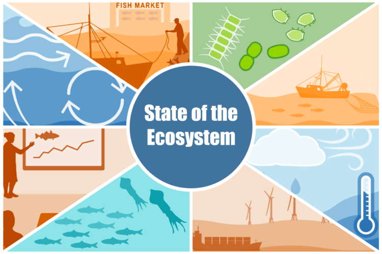
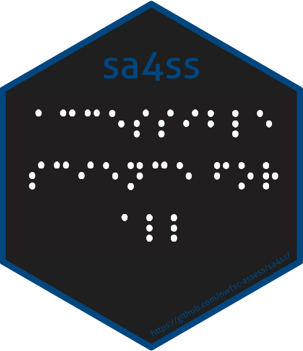

R Markdown for Reports
This week will shift gears and talk about writing reports using R Markdown.
Overview
R Markdown is a format that allows you to combine text and R code.
From RStudio you can output your file in many formats: html, PDF, Word,
presentations. We are exploring a small slice of R Markdown.
If you have never worked with R Markdown, start with RStudio’s online
lessons. That’ll get you up to speed with the basics. RStudio R Markdown
lessions
When you are ready to explore more, go to this great R Markdown resource R Markdown for Scientists. The R Markdown Definitive Guide is also a good resource.
What about Quarto?
Quarto is also created by RStudio and is the “next-gen” R Markdown. If you are just starting out, just stick with R Markdown. Quarto is back compatible with R Markdown. But going forward, everyone will be switching to Quarto. I’ve started converting my easy websites and simple online documentation to Quarto. It’s not hard. Note the material here will work for Quarto.
R Markdown for reports
There are many on-line tutorials for R Markdown which will cover the basics. I’ll focus on some of the aspects of R Markdown related to creating the types of reports that we generate in NOAA Fisheries (and other agencies). These often are reports that have a standard format but use different data sets or that generate the same table or figure with different data (species, gear, location, etc). Automating the generation of these reports can really speed up your work:
Part 1 today
- orientation
- automating the making of tables and figures
- duplicating tables or figures by looping over a variable
- documenting the data used in a report
- math
- presentations
Part 2 next week
- putting the pieces together for a report
- table of contents
- Word templates to change look and formatting
- pulling in content from Google Docs or Spreadsheets
Set-up for today
Today I will use RStudio Cloud so you can follow along without having to install any packages or TeX (for PDF generation).
Click here and sign in with a Google account (any one you want) to follow along. You can also make an account.
Running locally
If you want to follow along on your computer, then create a RStudio project using this repo https://github.com/RVerse-Tutorials/Rmarkdown-Tutorial.git
- You can download a zip file of the repo and create an RStudio project from that folder
- Or if you are set up with Git, you can use the link to create an RStudio project with the files
Note If you are using RStudio on your own computer, there are some packages that you’ll need: {rmarkdown}, {knitr}, {kableExtra}, {flextable}, {ggplot2}, {xtable}.
To make PDF files you will need a LaTeX installation. If you don’t have one already (if you are not sure, then you don’t), you can install tinytex. Run these lines:
install.packages('tinytex')
tinytex::install_tinytex()Build your first R Markdown file
- Open RStudio, and click File > New File > R Markdown… .
- Select the default (document) and click ok. This will open a template R Markdown document.
- Save the file and then click ‘Knit’ in the nav bar above your template.
- Download the necessary packages if RStudio complains and won’t build.
Note the first time you make a PDF, {tinytex} will load any needed packages and it can take a long time. You’ll see a spinning wheel on the R Markdown tab.
Note, if you are using RStudio Cloud, I have installed all these things for you.
YAML
Open up Basic.Rmd.
At the top you see
---
title: "Basic"
author: "EE Holmes"
output: html_document
---This is the yaml which gives the instructions about how
to process your R Markdown file. The yaml file is sensitive
to spaces. Do not add or subtract spaces. This yaml is very
simple, but the yaml can be complex for some applications.
We will only be working with simple examples.
After the yaml is the content. To see a summary of R
Markdown formating, click ‘Help’ menu and then ‘Markdown Quick
Reference’.
Formats
We can create documents in different formats from this Rmd file. Click the drop-down menu next to the ‘Knit’ button.
- HTML Select ‘knit to HTML’ to create a web document.
- Word Select ‘knit to Word’ to create a Word document.
- PDF Select ‘knit to PDF’ to create a PDF. Note need for a LaTeX installation (easiest is tinytex).
Try creating an Rmd file File > New File > R Markdown… and see the templates that are offered.
Getting help
In RStudio, click the ‘Help’ tab in the top nav bar. You will see ‘Markdown Quick Reference’. That has basic markdown syntax. You can also click ‘Cheatsheets’ and there are two references sheets. Using Google, you can also find answers to any questions that the RStudio help files doesn’t answer. See also R Markdown for Scientists.
Tips:
- Markdown is sensitive to leading spaces. ” ## Topic” will not produce a header while “## Topic” will. ” ```{r}” (note leading space) will not be interpreted as R code.
- Markdown is sensitive to line returns. If you are tying to make a list, “1. item”, then you must have two line returns before the “1. item”.
Figures
- Figures
Figures.Rmd - Figures in a for loop and side by side
Figures_for_loop.Rmd
Tables
- Tables
Table.Rmd - Tables for Word, html, or latex
Table_Extras.Rmd - Tables in a for loop
Tables_for_loop.Rmd - Making tables using a function. This allows you to make the same table but with different data. A common example would be making a standard table for each species or each population in a dataset. “Report with Tables” folder shows you how to do that. Start with the README file.
Presentations
- ioslidy_presentation.Rmd Choose File > New > R Markdown > ioslidy presentation to create this presentation template.
- xaringan_presentation.Rmd You will need to install the xaringan package.
- Templates with branding
- Examples of xaringan slides for the sdmTMB package
Extras
- Math
Math.Rmd - Table of contents and Code folding
Extras.Rmd
Fisheries reports using R Markdown
Here are some real examples of NOAA Fisheries reproducible reports created with R Markdown.
Northeast US State of the Ecosystem reports, and technical documentation: Website with links to reports, GitHub repo for Mid Atlantic report ❖ GitHub repo for New England report ❖ GitHub tech doc repo ❖ K Bastille paper on the report and process ❖ K Bastille presentation
Atlantic Offshore Wind Development Socioeconomic Reports These reports are all done in R Markdown. You can see how they use a standard format.
{sa4ss} R package for creating stock assessment documents for the Pacific Fishery Management Council. The package provides (1) a consistent structure, (2) generic text that should be the same across all stocks, (3) embedded functionality to create an accessible pdf that satisfies NOAA’s guidance for 508 compliance, and (4) increased speed compared to creating a word document from scratch.
 {NMFSReports}
R package The NMFSReports Package has all of the basic architecture
you need to create reproducible and repeatable NOAA Tech Memos in R
Markdown! This approach is perfect for efficiently rolling out annual
(or other regular) reports or reports with formulaic sections (the same
chapter structure but for a different area or species). Scripts
integrate table, figure, data, and bibliography management and design
automation.
{NMFSReports}
R package The NMFSReports Package has all of the basic architecture
you need to create reproducible and repeatable NOAA Tech Memos in R
Markdown! This approach is perfect for efficiently rolling out annual
(or other regular) reports or reports with formulaic sections (the same
chapter structure but for a different area or species). Scripts
integrate table, figure, data, and bibliography management and design
automation.Fisheries Economics of the United States The 2016-2019 reports were produced with R Markdown. This shows you that you can customize the output of your reports to achieve a specific, and uniform, formating.
More Rmd examples
- Websites: The workshop website is built off Rmd files. See the website tutorial to learn how to do this. It is super easy.
- Online books using bookdown: Books like this one for our time-series course are easy to make using Rmds. See the bookdown tutorial to learn how to do this. Again super easy.
- Create a spiffy landing page for your repository: Like this one for our NMFS R User Group. Made with the {postcards} and {distill} packages.
- A journal article repo. Journal
Article This shows you a realistic repository for a journal article.
I’ve cut out many paragraphs here and there to shorten it, but it is
still has all the parts. The repository is a self-contained paper with
all the data and the analyses are redone completely whenever
Main.Rmdis re-knit. So if the data change, all the analyses will be updated. - Making tables using a function. This allows you to make the same
table but with different data. A common example would be making a
standard table for each species or each population in a dataset. Report
with Tables shows you how to do that. Start with the
READMEfile.
Figure and Table numbering
Automatic figures and table numbering for a paper or a report is a hassle with R Markdown. Here is my solution. The Journal Article repo uses this method. 2022: last I checked people were still using this method, but I suspect that this will be solved in the future.
Accessibility
Knitting in RStudio by clicking the Knit button uses
rmarkdown::render() which will automatically produce an
html document that is more accessible than other ways that you might
knit a R Markdown document. However you’ll need to do some special
things to add alt info to figure in the html, specifically add a figure
caption.
Adding figure alt text
If you don’t need to have figure captions or if you are ok with the figure legend and alt text being the same, they adding alt text for figures is quite easy.
Figure caption displayed and alt text will be the same
plot(1:10)
This will be the alt text
No figure caption displayed
Add this to the top of your Rmd (or save to a css file and put that in the yaml) and the figure caption will not show up in your html.
<style>
.caption {
display:none;
}
</style>Use html
Another approach is to have R Markdown save your figures, and then insert those with html. Then you have full control over the caption, alt text and can add the longdesc tag also.
Adding table captions
You can use caption= with knitr::kable() to
add captions.
knitr::kable(cars[,1:2], caption="This will be the Table caption")| speed | dist |
|---|---|
| 4 | 2 |
| 4 | 10 |
| 7 | 4 |
| 7 | 22 |
| 8 | 16 |
| 9 | 10 |
| 10 | 18 |
| 10 | 26 |
| 10 | 34 |
| 11 | 17 |
| 11 | 28 |
| 12 | 14 |
| 12 | 20 |
| 12 | 24 |
| 12 | 28 |
| 13 | 26 |
| 13 | 34 |
| 13 | 34 |
| 13 | 46 |
| 14 | 26 |
| 14 | 36 |
| 14 | 60 |
| 14 | 80 |
| 15 | 20 |
| 15 | 26 |
| 15 | 54 |
| 16 | 32 |
| 16 | 40 |
| 17 | 32 |
| 17 | 40 |
| 17 | 50 |
| 18 | 42 |
| 18 | 56 |
| 18 | 76 |
| 18 | 84 |
| 19 | 36 |
| 19 | 46 |
| 19 | 68 |
| 20 | 32 |
| 20 | 48 |
| 20 | 52 |
| 20 | 56 |
| 20 | 64 |
| 22 | 66 |
| 23 | 54 |
| 24 | 70 |
| 24 | 92 |
| 24 | 93 |
| 24 | 120 |
| 25 | 85 |
No table caption displayed
Add this to the top of your Rmd (or save to a css file and put that in the yaml) and the table caption will not show up in your displayed html but will still be there for accessibility.
<style>
caption {
display:none;
}
</style>Accessibility resources
NMFS R UG session on 508 Compliance and R Markdown Take a look at the {sa4ss} R package which has accessibility functionality added.
https://r-resources.massey.ac.nz/rmarkdown/
Latex (PDF)*
Making accessible PDFs is harder in LaTeX. You might look at the tagpdf.
Another option is to have R Markdown save the figures, and use LaTeX:
\begin{figure}
\centering
\includegraphics{fig1.png}
\Description[short desc]{long description}
\caption{the caption}
\label{fig:fig1}
\end{figure}